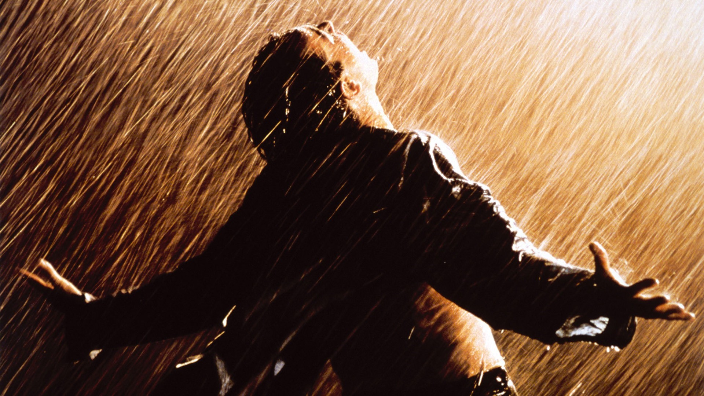

Movie Review
Search:
1. The BOYS

Rating: ⭐ ⭐ ⭐ ⭐ ⭐
Think superheroes, but way more messed up. Like, exploding heads and evil corporations messed up. This show throws punches (and sometimes laser eyes) to show that good guys ain't always so good, and bad guys can be weirdly charming.Prepare to laugh, flinch, and question everything you thought you knew about heroes. It's like a rollercoaster made of violence, humor, and thinking real hard.
"The Boys" is basically the most fun you can have while feeling horrified. It's like your favorite comic book, but with an R rating and a whole lot more swearing.
So, if you're down for a wild ride, buckle up and dive in. Just maybe keep some snacks handy for when things get...spicy. ️

Rating: ⭐ ⭐ ⭐ ⭐ ⭐
Winter's coming, but the drama's already hot in Game of Thrones! Backstabbing, dragons, and epic battles - it's like medieval soap opera on steroids. You'll love, hate, and maybe even cheer for characters who'll switch sides faster than a Targaryen on a dragon.
Prepare for twists that'll leave you gasping (and maybe cursing the writers). Remember Ned Stark? Yeah, good times. This show's got more deaths than a White Walker convention, so buckle up and grab your tissues. ⚔️
But hey, all that drama comes with stunning visuals and a world so rich, you could practically smell the dragon breath. ❄️ It's like getting lost in a fantasy novel, but with way more wine and nudity.
So, if you're down for a wild ride through Westeros, Game of Thrones is your winter binge-fest. Just don't get too attached to any characters...unless you like your heart broken colder than the Wall.

Rating: ⭐ ⭐ ⭐ ⭐ ⭐
Avengers: Endgame is basically the epic family reunion you never had, but with way more explosions and superheroes in tights. Remember that Thanos guy who snapped half the universe away? Well, the gang's back to kick his cosmic butt, time travel style! ⌚️
Think action-packed battles like a giant cosmic mosh pit, with Iron Man rocking his final encore and Captain America wielding the hammer like a total boss. Plus, there's enough emotional punch-to-the-gut moments to make even Hulk cry (and trust me, that's saying something).
But it's not all capes and lasers, Endgame also takes a heartfelt look at what makes these heroes tick. We see Thor battling depression, Black Widow facing her past, and even Hawkeye getting a chance to be a dad. It's like a superhero therapy session gone right, with a sprinkle of time travel shenanigans.
So grab your popcorn, tissues, and maybe a therapist on speed dial, because Endgame is a rollercoaster ride of emotions, explosions, and everything in between. Just be warned, you might leave the theater wanting to assemble your own team of misfits and save the world (or at least clean your room).
Bonus points: Keep an eye out for all the Easter eggs and callbacks to past movies - it's like a giant Marvel treasure hunt for fans!
Bonus points: Keep an eye out for all the Easter eggs and callbacks to past movies - it's like a giant Marvel treasure hunt for fans!

Rating: ⭐ ⭐ ⭐ ⭐ ⭐
Butterfly wings ripple through time, twisting Evan's life into a mind-bending kaleidoscope. Forget predictable do-overs; this time travel throws him headfirst into a chaotic carousel of alternate realities, each triggered by a seemingly insignificant butterfly of an action in his past.
Prepare for whiplash-inducing twists that'll leave you gasping and questioning everything you know about cause and effect. One moment Evan's a carefree college kid, the next he's a deaf outcast or a lobotomized shell. It's like a twisted game of "what if," where the butterfly effect on steroids holds the remote control to his ever-shifting destiny.
But it's not just a mind-bender; The Butterfly Effect packs a gut punch. Evan's desperate attempts to fix his past lead to increasingly horrifying consequences, forcing him to confront the dark corners of his own choices. Think "Groundhog Day" meets "Memento" with a generous dash of psychological thriller.
So buckle up for a rollercoaster ride through Evan's fractured reality, where every choice is a butterfly flap, every consequence a hurricane. Just remember, with this time-bending twist on fate, nothing is ever truly fixed. And the price of changing your past might be far higher than you ever imagined.

Rating: ⭐ ⭐ ⭐ ⭐ ⭐
Stone walls loom, casting long shadows on a life stolen. Andy Dufresne, wrongly convicted of murder, finds himself confined within the brutal Shawshank prison. Yet, even within these oppressively dark walls, a defiant ember of hope flickers to life.Morgan Freeman's voice, rich with wisdom and the passage of time, guides us through a tapestry of
resilience and friendship. We witness Andy's quiet strength, his unwavering belief in freedom, and the inspiring bond he forges with Red, a fellow inmate who becomes both confidante and witness to his extraordinary journey.This cinematic masterpiece isn't just a film; it's a testament to the power of hope, a reminder that even in the darkest corners,
freedom can bloom. So, grab your popcorn and prepare to be swept away by a story that will stay with you long after the credits roll.
Bonus tip: Keep an ear open for the iconic Mozart sonata, a symbol of Andy's unwavering spirit, that will leave you with goosebumps every time it plays.
Bonus tip: Keep an ear open for the iconic Mozart sonata, a symbol of Andy's unwavering spirit, that will leave you with goosebumps every time it plays.